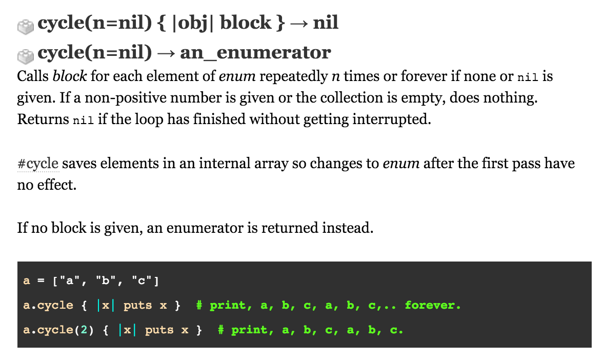

Enumerable methods
Enumerable methods are a helpful tool in Ruby, but they can be pretty dificult to understand the first time you use them. Luckily, we have the Ruby Docs as a resource to understand these methods better. However, even after reading these documents, the methods can be difficult to understand. The snippet below if from the Ruby Docs. I have explained the "cycle" enumerable method to the right.

- #cycle iterates through a collection similar to #each, but with a few manjor differences
- #cycle takes one argument that specifies how many times you want it to iterate through a collection (I think of it as marrying the #times and #each methods)
- If no argument is passed, #cycle will continue to iterate through indefinitely (yikes, infinite loop!)
- As you would expect, the block is evaluated during each iteration